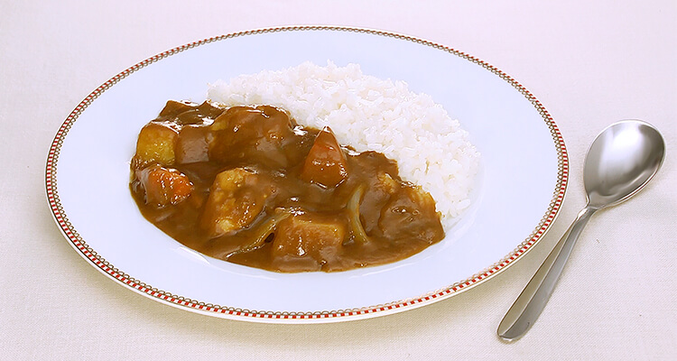

japanese curry

got most of this recipe from here
painfully easy and painfully delicious. have a glass of water on hand, not because it's spicy but because of its sodium content
my favorite brand is vermont curry so i'd recommend using that! you can add meat if you'd like but i personally don't like it in this dish
ingredients
- 1 box curry sauce mix (6 pieces)
- 2 onions
- 3 & ½ potatoes (small)
- 2 carrots
- 1 tbsp vegetable oil
- 3½ cups of water
- 3 cups of rice
directions
- Preheat oil in pot, add bite-sized pieces of the vegetables, and sauté well.
- Add water and simmer until ingredients soften (about 15 minutes).
- Break apart curry sauce mix into pot and stir until dissolved.
- Simmer once more, stirring occasionally (about 10 minutes).